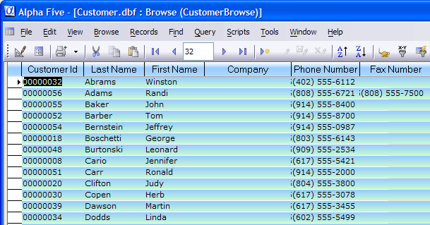
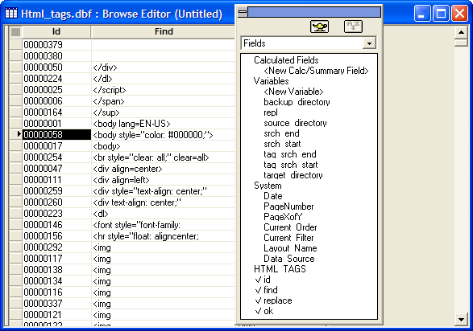

Using the Browse Editor
A browse provides a multi-record, tabular view of data in a table or set. Each row in a browse table corresponds to a record, and each column corresponds to a field.
A browse can display fields from a table (or set) or selected fields. The fields can be in any order.
For example, you use Alpha Anywhere to track inventory. By using a browse, you can view multiple items at a time. This can assist you in finding a specific item, or viewing detailed information about an item.

Browse View
Using the Browse Editor
Unlike other Alpha Anywhere editors that use empty field objects to represent the location and appearance of data on a layout, the Browse Editor uses live data. Each field included in the layout appears as a column of data, with actual values taken from the corresponding field in the table. Whenever you edit a browse, each change is applied directly to the browse display. However, the Browse Editor display does not let you enter or change data.
After you create a new browse, the Browse Editor appears. It contains two windows:
the new browse
the Drag and Drop List (the floating toolbar with the white background, which lists variables, table fields, and system fields that you can place on the browse).

Note how the title of the new browse identifies its table and the browse's name, which at this point is untitled. The button at the top of the screen hides and displays the Drag and Drop list.
From this point you can:
Place table fields on the browse
Place summary fields, calculated fields, and system fields on the browse
((|#Rearranging_Columns|Rearrange the positions of columns)) on the browse
Adjust the ((|#Resizing_Columns_and_Rows|width of individual columns and the height of rows)).
Change the color, font, font size, and other properties of the entire browse, individual columns, and column titles.
Create simple true/false expressions that conditionally change a field's color or font based on its value.
Define rules for alternate row colors
Adding dynamic content, including text, buttons, and images to browse columns
Create and assign toolbars to appear with the browse.
Create and assign menus to appear with the browse.
Add help text to the browse or bubble help to fields
Restrict access to record operations like enter, change, and delete, making your browse less confusing to inexperienced users and preventing unauthorized changes.
Add security to the browse
When creating a browse for a set, display both parent and child records in the browse, or just parent records.
Save record order and record selection criteria in a browse layout.
See Also
New Browse Genie, Working with a Browse in Design Mode, Using Browse by Expression, Setting User Restrictions, Setting Filter and Order Criteria, Specifying the Toolbar for a Layout, Specifying the Menu for a Layout